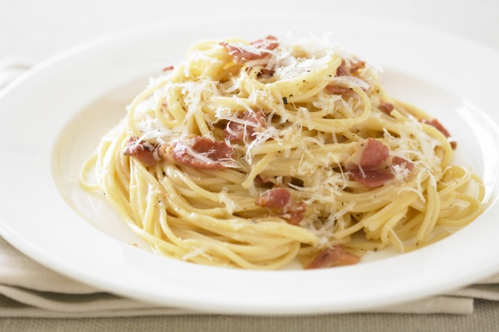

Μακαρονάδα Καρμπονάρα

Υλικά
- 250 γραμ προσιουτο σε κυβους
- 3 κουταλιες σουπας βουτυρο αγελαδος
- 1 ποτηρι κρασι λευκο
- 4 αυγα
- 2 κ.γ. πιπερι μαυρο
- 1/2 μακαρονια
- 250 γραμ παρμεζανα
Εκτέλεση
- Σωταρουμε το προσιουτο στο βουτυρο και ριχνουμε το κρασι. Σε 10 λεπτα το βγαζουμε απ τη φωτια.
- Σε ενα μεγαλο μπωλ χτυπαμε τα αυγα, ριχνουμε περιπου ολο το τριμμενο τυρι και το πιπερι και ανακατευουμε καλα να γινει ενας πηχτος χυλος.
- Αφου βρασουμε al dente τα μακαρονια, τα στραγγιζουμε και τα ριχνουμε στο χυλο κανοντας τα ενα μειγμα.
- Σερβιρουμε στο πιατο, περιχυνοντας τα με το προσιουτο και το ζωμο του.
- Στο τελος προσθετουμε απο πανω παρμεζανα.
Λίγες ακόμα συμβουλές
Μπορείτε αντί για προσιουτο να χρησιμοποιήσετε μπέικον, απάκι ή ζαμπόν!